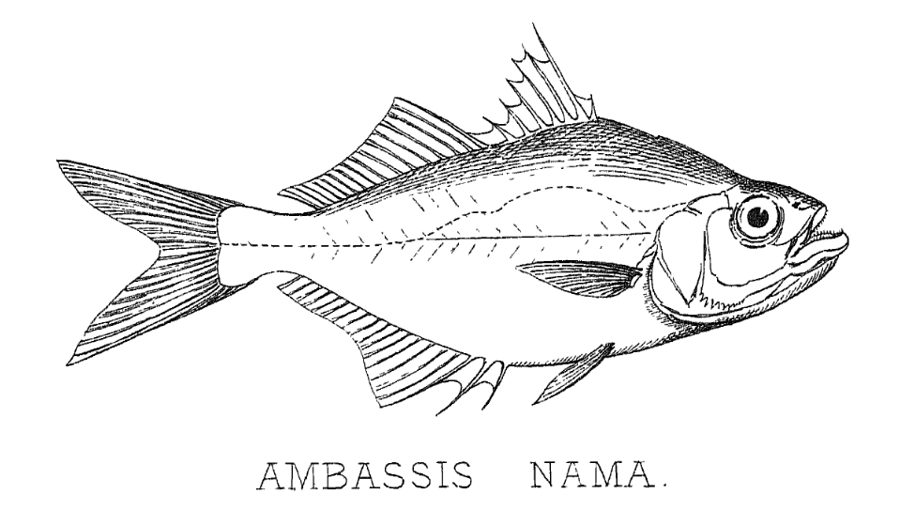

चंदाElongate Glassy Perchlet
Chanda nama · Ambassidae · FSH-0012

- Scientific name
- Chanda nama Hamilton, 1822
- Family
- Ambassidae
- Hindi
- चंदा
- Status here
- native
- IUCN
- LC
When to look कब देखें
Present all year.
चंदा / Elongate Glassy Perchlet
Chanda nama Hamilton, 1822 — Ambassidae
चंदा (एलोंगेट ग्लासी पर्चलेट) — पूर्वी उत्तर प्रदेश के तालाबों, पोखरों और नहरों के किनारे तैरती हुई वनस्पतियों के बीच पाई जाने वाली एक अत्यंत छोटी और आम मीठे पानी की निवासी मछली है। इसकी सबसे बड़ी विशेषता इसका पूरी तरह से पारदर्शी (transparent) शरीर है, जिससे इसके शरीर के भीतरी अंग (internal organs) और रीढ़ की हड्डी (skeleton) बाहर से ही साफ़ दिखाई देती है। इसका शरीर अत्यधिक चपटा और अर्ध-अंडाकार (laterally compressed) होता है, जिस पर एक चांदी जैसी चमक होती है। यह आकार में केवल 8 सेंटीमीटर तक बढ़ती है। यह मछली मुख्य रूप से पानी की ऊपरी सतह पर तैरने वाले छोटे कीड़ों और मच्छरों के लार्वा को खाती है, और गाँव के तालाबों में संख्या के मामले में यह अक्सर सबसे अधिक पाई जाने वाली मछली होती है।
Quick Identification त्वरित पहचान
| Feature | Description |
|---|---|
| Size | Very small fish (typically 4.8–8.0 cm total length); weight 2–8 g |
| Transparency | Body is glass-like and transparent; backbone, ribs, and swim bladder are clearly visible |
| Body shape | Strongly compressed laterally; back is highly arched; snout is slightly pointed |
| Colouration | Translucent yellow-green dorsally; silvery sheen on belly and gill covers |
| Mouth | Large, oblique mouth with a prominent lower jaw projecting outwards |
| Fins | Two dorsal fins (first has sharp spines); caudal fin is deeply forked |
Field tip: Look in simple hand nets used in village ponds. The tiny, flat, glass-like body with visible internal organs and a silvery gut sac makes it immediately recognizable.
Morphology आकारिकी
Biometrics (typical measurements for adult specimens in local village ponds):
| Measurement | Range |
|---|---|
| Standard length (SL) | 40–70 mm |
| Total length (TL) | 48–80 mm |
| Weight | 2–8 g |
Body structure: The body is short, deep, and extremely compressed. The dorsal profile rises steeply from the snout to the dorsal fin base. The scales are very small, thin, and cycloid, often appearing absent due to their transparency. The mouth is wide and oblique, with a strongly projecting lower jaw. The first dorsal fin has 7 sharp spines (the first spine is very short), and the second dorsal fin has 1 spine and 9–11 soft rays. The anal fin has 3 spines and 14–17 soft rays. The caudal fin is deeply forked.
Transparency and details: The body muscle is completely transparent, revealing the vertebrae, ribs, spinal cord, and the silvery lining of the abdominal cavity. There is a silvery-golden patch on the gill covers (operculum) and a thin dark line running along the middle of the body sides. The tips of the dorsal and caudal fins are often dusty black.
Behaviour & Ecology व्यवहार और पारिस्थितिकी
Shoaling surface swimmer.
- Group behavior: Lives in large shoals (schools) containing hundreds of individuals, swimming close to the water surface or hiding among submerged root systems of water hyacinth [FLR-0013 Water Hyacinth] and lotus.
- Surface feeding: Feeds actively in the upper water column, using its upward-pointing mouth to capture insects falling onto the water surface.
- Predation avoidance: The transparency of the body serves as a highly effective camouflage in clear or weed-choked waters, making it difficult for predatory fish and birds to track them.
Ecological Role पारिस्थितिक भूमिका
Vital link in aquatic food webs.
- Prey base: Due to their massive abundance, they serve as the primary food source for almost all predatory wetland animals, including snakeheads, catfish, kingfishers, herons, and water snakes.
- Insect regulator: They consume enormous numbers of mosquito larvae and midges, serving as a natural biological control agent in standing water.
Life Cycle / Phenology जीवन चक्र
- Breeding season: June to September, matching the monsoon floodings.
- Egg laying: The female lays tiny, adhesive, transparent eggs (up to 3,000) that attach to the roots and leaves of floating weeds like water hyacinth.
- Incubation: The eggs hatch very quickly, within 12–15 hours.
- Growth: The larvae are microscopic and transparent, growing rapidly to adult form within 3–4 months. They are short-lived, with most individuals completing their life cycle in 1 to 2 years.
Host Plants or Prey आहार
Primary food items:
- Insects: Mosquito larvae (wrigglers), pupae, midges, and small water bugs.
- Plankton: Microscopic aquatic crustaceans (cladocerans, copepods) and rotifers.
Predators / Natural Enemies शत्रु
- Fish: Predators like the Great Snakehead [FSH-0009 Great Snakehead] and Stinging Catfish [FSH-0011 Stinging Catfish].
- Birds: Kingfishers (such as the White-throated Kingfisher [BRD-0031 White-throated Kingfisher] and [BRD-0010 Common Kingfisher]) and herons (like [BRD-0004 Indian Pond Heron]).
- Reptiles: Checkered Keelback water snakes (Xenochrophis).
Agricultural / Human Relevance कृषि प्रासंगिकता
Trash fish and health ally.
- Biological mosquito control: Highly beneficial in rural health management. By feeding on mosquito larvae in stagnant village drains and paddy fields, they help reduce the transmission of malaria and dengue in Basti block villages.
- Nutritional food: Although classified as "trash fish" (pothia or chanda) due to their small size, they are caught in large numbers by villagers using mosquito nets or sheet traps. They are eaten whole (including bones) and serve as an important source of calcium and micronutrients for low-income rural households.
- Aquarium popularity: Sometimes collected and sold as "glass fish" in urban pet shops, where they are occasionally dyed with artificial fluorescent colors (a harmful practice that should be discouraged).
Expected Locally स्थानीय रूप से अपेक्षित
Not a field record. Written from published accounts for eastern Uttar Pradesh. No confirmed local sighting yet — if you have seen it, that is what the atlas needs.
अभी तक स्थानीय पुष्टि नहीं। यह विवरण प्रकाशित स्रोतों से है, किसी अवलोकन से नहीं।
Extremely common in all village ponds (dahi and talab), sluggish drainage canals, and irrigation ditches across Basti district. During post-monsoon fishing, they are harvested in massive quantities. They are typically dried in the sun or fried whole into crispy dishes (chanda fry) in village kitchens.
Distribution वितरण
Global range: Widespread in Pakistan, India, Nepal, Bangladesh, Myanmar, and Thailand.
In India: Found throughout the freshwater systems of the plains, particularly in the Ganges-Brahmaputra basin.
In Uttar Pradesh: Abundant in all rivers, perennial canals, wetlands, and seasonal water bodies.
In Basti district / eastern UP: Found in almost every stable water body, from the margins of the Ghaghra river to local village drainage ditches.
Research Questions शोध प्रश्न
Anyone can investigate these | कोई भी इन प्रश्नों की जाँच कर सकता है
- What is the average number of mosquito larvae consumed by a single Chanda nama per hour in local pond water? — Perform feeding trials in glass jars.
- How does the presence of invasive water hyacinth roots affect the nesting density of this species? — Sample weeds and count attached eggs.
- What is the seasonal variation in the abundance of Chanda nama in Basti paddy fields during the cultivation cycle? — Take monthly sweep-net samples.
- How does the transparency of the fish change when exposed to muddy water vs. clear water over several days? / पानी की मटमैलेपन (turbidity) के बदलने पर क्या चंदा मछली की पारदर्शिता में कोई बदलाव आता है? — Observe fish in controlled tanks.
- Does the use of synthetic chemical pesticides in rice fields lead to immediate mortality of Chanda nama shoals? / धान के खेतों में रासायनिक कीटनाशकों के प्रयोग से क्या चंदा मछली के झुंडों पर कोई विपरीत प्रभाव पड़ता है? — Compare fish survival rates in pesticide-treated vs. organic fields.
Similar Species मिलती-जुलती प्रजातियाँ
| Species | Key Difference | हिंदी |
|---|---|---|
| Parambassis ranga (Indian Glassy Fish) | Deeper, more rounded body; lacks projecting lower jaw; lateral line is complete; clear yellow-green | चंदा (रंगा) — गोल शरीर, चोंच रहित जबड़ा |
| Puntius sophore (Pool Barb) | Silvery body, not transparent; distinct black spot at tail base; thick scales; has barbels | सिधरी — अपारदर्शी शरीर, पूँछ पर काला धब्बा, शल्क |
| Amblypharyngodon mola (Mola Carplet) | Silvery longitudinal band; not transparent; deeper body; herbivorous | महुआ / मोआ — चाँदी जैसी पट्टी, अपारदर्शी |
Field rule: Small size (under 8 cm), flat body, complete glass-like transparency showing internal skeleton, and projecting lower jaw identify the Elongate Glassy Perchlet.
Taxonomy & Classification वर्गीकरण
Original description. Francis Hamilton described the Elongate Glassy Perchlet as Chanda nama in 1822 in his work An Account of the Fishes found in the river Ganges and its branches (pp. 109, 371). The type locality was the Ganges river system. The genus name Chanda is the local Sanskrit/Hindi word for the moon, referring to the silvery, translucent appearance of these fishes. The specific name nama is a local Bengali name for the fish.
Subspecies. Monotypic — no subspecies are currently recognised.
Family and order placement. Placed in the order Perciformes, family Ambassidae (glassy perchlets).
Phylogenetic notes. Chanda nama is the type species of the genus Chanda, representing a specialized branch of small, highly compressed freshwater perchlets endemic to the Indian subcontinent.
IUCN status rationale. Listed as Least Concern (LC) due to its extremely wide geographic range, tolerance of varied habitats, and high population counts, showing no signs of major decline.
Photo Gallery फोटो गैलरी
References संदर्भ
- Hamilton, F. (1822). An Account of the Fishes found in the river Ganges and its branches. Archibald Constable & Co., Edinburgh, pp. 109, 371. [original description]
- Talwar, P. K. & Jhingran, A. G. (1991). Inland Fishes of India and Adjacent Countries. Vol. 2. Oxford & IBH Publishing Co., New Delhi.
- Jayaram, K. C. (2010). The Freshwater Fishes of the Indian Region. 2nd ed. Narendra Publishing House, Delhi.
- Roberts, T. R. (1994). Systematic revision of the Asian freshwater glassy perchlets (Ambassidae), with descriptions of three new species of Gymnochanda. Records of the Western Australian Museum, 16(3), 263-290.
- IUCN SSC Freshwater Fish Specialist Group (2024). Chanda nama. IUCN Red List of Threatened Species. Ver. 2024.
- GBIF Occurrence Data — Chanda nama, Uttar Pradesh (2010–2025).
Source file: species/fauna/fish/glassy_perchlet.md